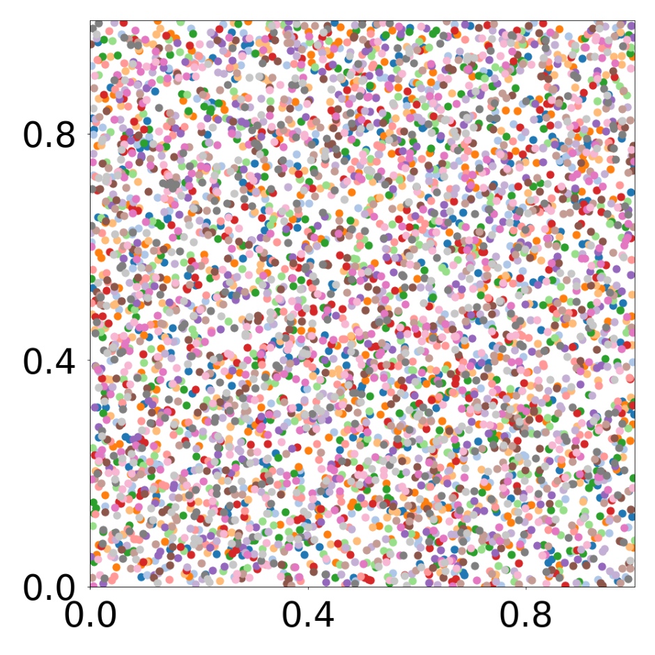
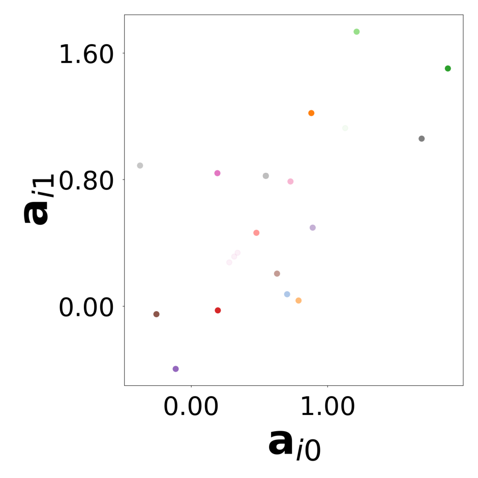
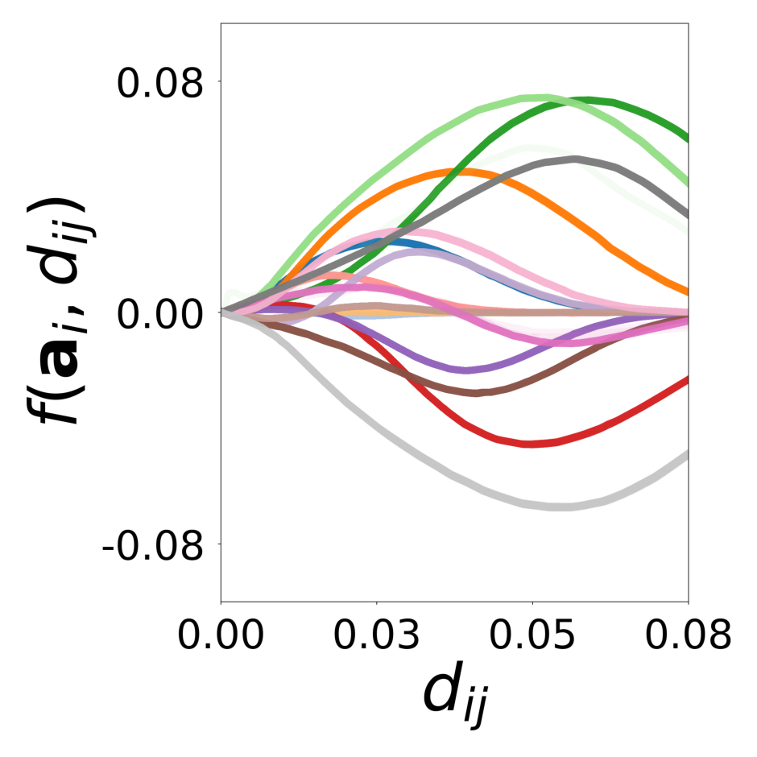
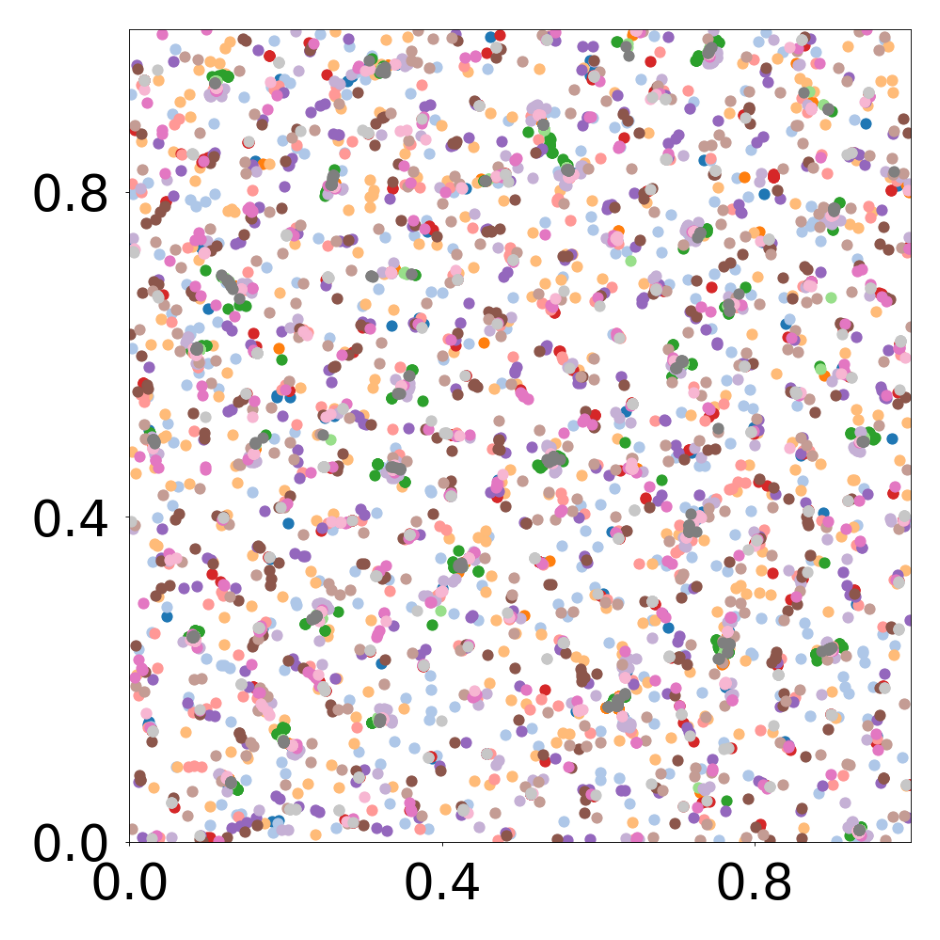

config_file = 'arbitrary_16'
figure_id = '3_4'
config = ParticleGraphConfig.from_yaml(f'./config/{config_file}.yaml')
device = set_device("auto")Training GNN on attraction-repulsion (16 particle types)
Particles
GNN Training
This script creates the fourth column of Figure 3. A GNN learns the motion rules of an attraction-repulsion system. The simulation used to train the GNN consists of 4800 particles of three different types. The particles interact with each other according to 16 different attraction-repulsion laws.
First, we load the configuration file and set the device.
The following model is used to simulate the attraction-repulsion system with PyTorch Geometric.
class AttractionRepulsionModel(pyg.nn.MessagePassing):
"""
Compute the speed of particles as a function of their relative position according to an attraction-repulsion law.
The latter is defined by four parameters p = (p1, p2, p3, p4) and a parameter sigma.
See https://github.com/gpeyre/numerical-tours/blob/master/python/ml_10_particle_system.ipynb
"""
def __init__(self, p, sigma, bc_dpos, dimension=2):
super(AttractionRepulsionModel, self).__init__(aggr='mean')
self.p = p
self.sigma = sigma
self.bc_dpos = bc_dpos
self.dimension = dimension
def forward(self, data: Data):
x, edge_index = data.x, data.edge_index
edge_index, _ = pyg_utils.remove_self_loops(edge_index)
particle_type = to_numpy(x[:, 1 + 2 * self.dimension])
parameters = self.p[particle_type,:]
d_pos = self.propagate(edge_index, pos=x[:, 1:self.dimension + 1], parameters=parameters)
return d_pos
def message(self, pos_i, pos_j, parameters_i):
relative_position = self.bc_dpos(pos_j - pos_i)
distance_squared = torch.sum(relative_position ** 2, dim=1) # squared distance
f = (parameters_i[:, 0] * torch.exp(-distance_squared ** parameters_i[:, 1] / (2 * self.sigma ** 2))
- parameters_i[:, 2] * torch.exp(-distance_squared ** parameters_i[:, 3] / (2 * self.sigma ** 2)))
velocity = f[:, None] * relative_position
return velocity
def bc_pos(x):
return torch.remainder(x, 1.0)
def bc_dpos(x):
return torch.remainder(x - 0.5, 1.0) - 0.5The training data is generated with the above Pytorch Geometric model
p = torch.squeeze(torch.tensor(config.simulation.params))
sigma = config.simulation.sigma
model = AttractionRepulsionModel(
p=p,
sigma=sigma,
bc_dpos=bc_dpos,
dimension=config.simulation.dimension
)
generate_kwargs = dict(device=device, visualize=True, run_vizualized=0, style='color', alpha=1, erase=True, save=True, step=10)
train_kwargs = dict(device=device, erase=True)
test_kwargs = dict(device=device, visualize=True, style='color', verbose=False, best_model='20', run=0, step=1, save_velocity=True)
data_generate_particles(config, model, bc_pos, bc_dpos, **generate_kwargs)The GNN model (see src/ParticleGraph/models/Interaction_Particle.py) is trained and tested.
Since we ship the trained model with the repository, this step can be skipped if desired.
if not os.path.exists(f'log/try_{config_file}'):
data_train(config, config_file, **train_kwargs)The model that has been trained in the previous step is used to generate the rollouts. The rollout visualization can be found in paper_experiments/log/try_arbitrary_16/tmp_recons.
data_test(config, config_file, **test_kwargs)Finally, we generate the figures that are shown in Figure 3.
log_dir: ./log/try_arbitrary_16
GNN trained with simulation PDE_A (16 types), with cluster method: distance_plot threshold: 0.01
load data ...
vnorm:2.39e-03, ynorm:2.40e-03
network: ./log/try_arbitrary_16/models/best_model_with_1_graphs_20.pt
interaction functions ...
UMAP reduction ...
done ...
Clustering computation time is 0.1858987808227539 seconds.
0.9997916666666666 16
result accuracy: 1.0 n_clusters: 16 obtained with method: distance_plot threshold: 0.01
interaction functions ...
UMAP reduction ...
done ...
Clustering computation time is 0.20686697959899902 seconds.
0.9991666666666666 20
result accuracy: 1.0 n_clusters: 20 obtained with method: distance_embedding threshold: 0.01
all function RMS error: 9.2e-04+/-8.2e-04



